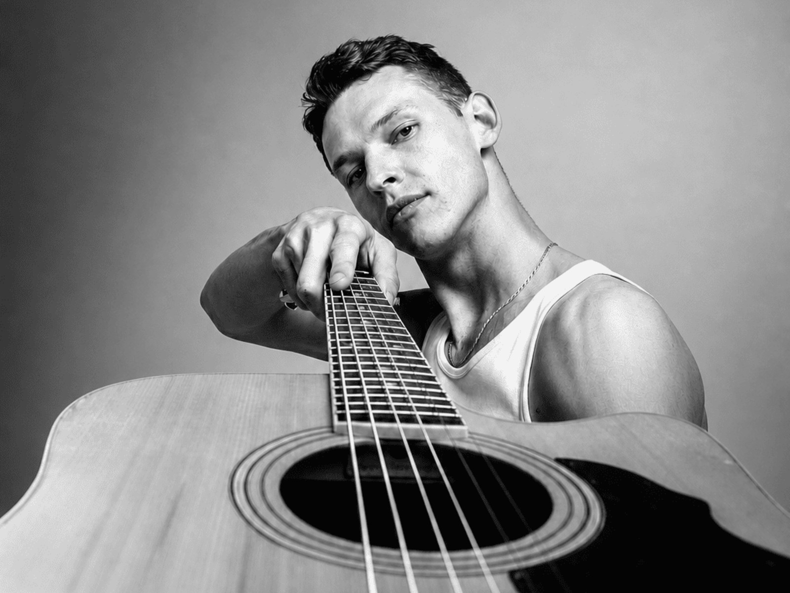
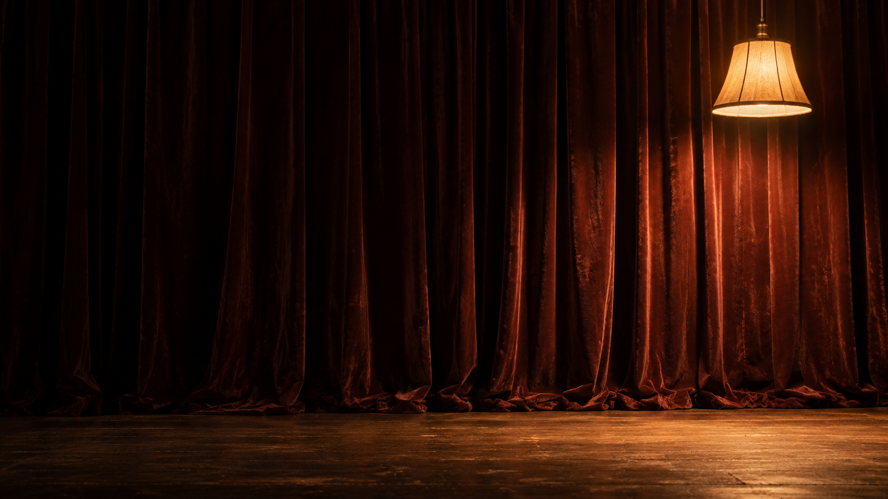
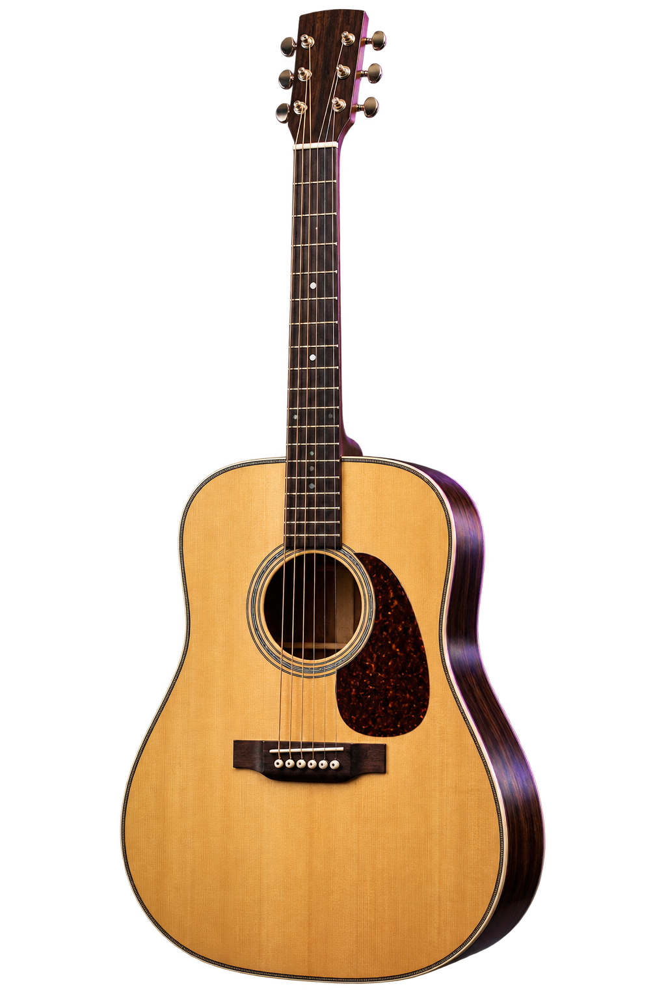
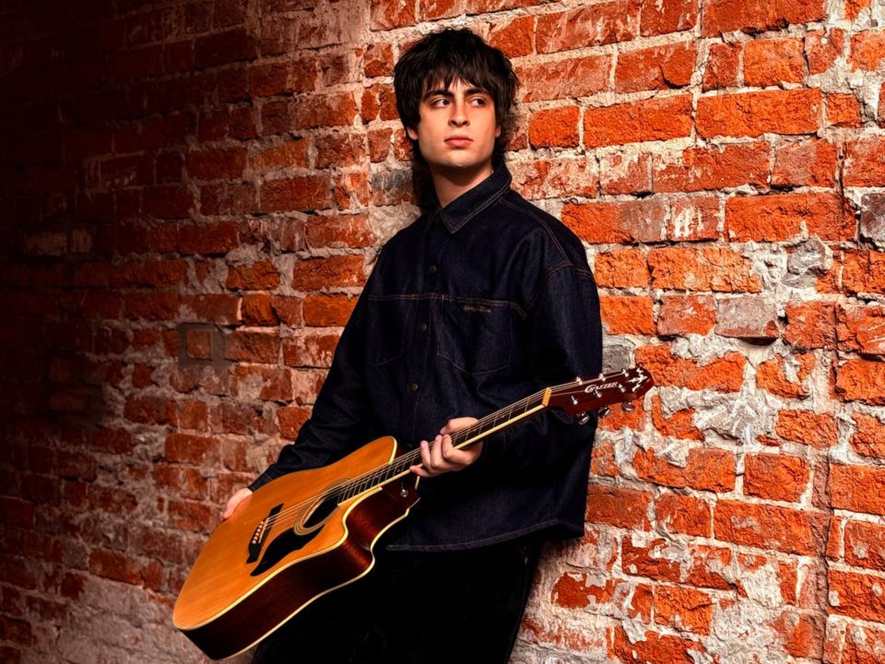

Акустика · живой голосВладислав Хеколов
Гитарист-вокалист · Москва


Тёплый свет. Знакомая мелодия. Свои люди.
Найдите музыканта для вашего вечера.
Сначала почувствуйте музыку.
Затем выберите того, с кем ваш
вечер прозвучит по-настоящему.

Акустика · живой голосГитарист-вокалист · Москва

Вокал · энергия вечераГитарист-вокалист · Москва